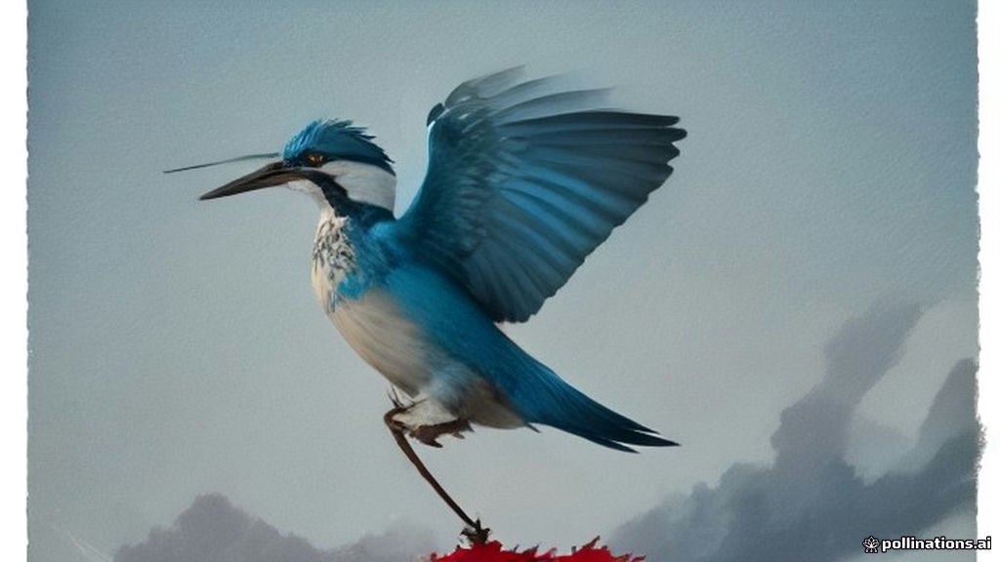

How Vijay Mallya's Kingfisher Airlines Went From 'King of Good Times' to ₹9,000 Crore Default
The year is 2012. The grand chandeliers of Kingfisher House in Mumbai hang silent, reflecting dust rather than the usual celebratory gleam. Outside, once impeccably uniformed pilots and cabin crew now gather, not for flight briefings, but for desperate protests, their voices hoarse with demands for unpaid salaries. "Mr. Mallya said he has no money to pay us," one employee recounted after a futile meeting, echoing the despair of thousands. The "King of Good Times," Vijay Mallya, the flamboyant liquor baron who had once promised to redefine Indian air travel, was nowhere to be seen, having reportedly left the country as his airline crashed under the weight of an astronomical ₹9,091.40 crore debt. Just seven years after its dazzling debut, Kingfisher Airlines, a symbol of luxury and aspiration, had disintegrated, leaving behind a trail of unpaid dues, grounded planes, and shattered dreams.
The World Before The Crown
In the early 2000s, India's aviation landscape was undergoing a dramatic transformation. Economic liberalization and a burgeoning middle class were fueling unprecedented growth in air travel. For decades, air travel had been a luxury, dominated by state-owned carriers like Air India and Indian Airlines, and full-service private players like Jet Airways. However, the real game-changer arrived in 2003 with the launch of Air Deccan, India's first low-cost carrier (LCC). Captain G.R. Gopinath, Air Deccan's founder, famously declared, "Now every Indian can fly," democratizing air travel with fares as low as ₹1. This ushered in a wave of LCCs like SpiceJet and IndiGo, making air travel affordable and intensely competitive.
Amidst this shift towards no-frills, cost-conscious travel, Vijay Mallya, known for his opulent lifestyle and the successful United Breweries Group, made a contrarian bet. In May 2005, he launched Kingfisher Airlines, not as another budget option, but as a premium, full-service carrier. Mallya envisioned an airline that was an extension of his "King of Good Times" persona, offering an unparalleled luxury experience. Kingfisher meticulously crafted an image of exclusivity: new Airbus A320-200 aircraft, spacious cabins, gourmet meals, in-flight entertainment with live TV, and attentive cabin crew. This was a stark contrast to the emerging LCC model, positioning Kingfisher as a five-star flying experience, appealing to affluent business and leisure travelers. The airline grew at a remarkable rate of 30% annually from 2005, quickly capturing a significant domestic market share. By December 2011, Kingfisher Airlines held the second-largest share in India's domestic air travel market.
The Crack In The Facade
Despite the outward glamour and rapid expansion, Kingfisher Airlines never once reported an annual profit since its inception. The foundation of its premium model was inherently high-cost, and while marketing brilliance painted a picture of success, cracks were forming in its capital structure.
The most significant misstep, widely cited as the turning point, was the acquisition of Air Deccan in 2007. Mallya's ambition was to achieve scale quickly and gain the necessary five years of domestic operational experience to fly internationally, a regulatory requirement at the time. The deal, valued at ₹550 crore, was funded largely by debt. Mallya famously declared it a "marriage made in heaven," envisioning a combined entity that would dominate all segments from luxury to budget.
In reality, it was a clash of incompatible cultures and business models. Air Deccan was built on extreme cost-efficiency, while Kingfisher thrived on lavish spending. Attempting to integrate a low-cost carrier into a premium brand caused immense operational chaos and strategic confusion. Air Deccan was rebranded first as Simplifly Deccan, then Kingfisher Red, but it struggled to find its footing. Its pricing was too high for budget travelers but too basic for premium customers, leading to poor load factors and declining revenue per seat. The acquisition saddled Kingfisher with massive debt and losses, including over $220 million in 2007-08 alone due to the merger. The company incurred losses exceeding ₹10 billion for three consecutive years after the merger.
As losses mounted, Kingfisher resorted to accumulating more debt to cover operational expenses. By 2009, its debt had reached approximately ₹5,665 crore, eventually climbing towards ₹7,000 crore. In November 2010, the airline attempted a debt restructuring package (DRP) with a consortium of 17 banks, which included converting some debt into equity and cutting interest rates. While this briefly provided some breathing room, it did not address the airline's fundamental inability to generate profit. The conversion price of ₹64.48 a share was significantly above the market price, making banks major shareholders but also exposing them to substantial losses as the share value plummeted.
The financial distress became apparent through a series of alarming events:
- Late Salaries: From August 2011, employees, including pilots and engineers, began experiencing delays in salary payments. This led to frequent strikes and protests, further disrupting operations.
- Vendor Defaults: Kingfisher defaulted on payments to fuel suppliers, aircraft lessors, and airport authorities. In December 2011, the Mumbai Income Tax department froze Kingfisher's bank accounts for non-payment of dues, totaling ₹70 crore.
- Grounded Aircraft: By early 2012, half of Kingfisher's fleet of 66 aircraft was grounded due to an inability to meet maintenance expenses and pay lease rentals.
What Happened Next
The house of cards collapsed swiftly. On October 1, 2012, Kingfisher Airlines declared a lockout and suspended all flight operations following a strike by its engineers and pilots protesting months of unpaid salaries. Just 19 days later, on October 20, 2012, the Directorate General of Civil Aviation (DGCA) suspended Kingfisher Airlines' flying license, citing its failure to present a viable financial revival plan and address concerns about its operations. The permit officially lapsed on December 31, 2012, and the airline never flew again.
The financial fallout was immense. By March 2013, Kingfisher's net worth had plunged to a negative ₹12,919 crore. Its accumulated losses by March 2013 stood at a staggering ₹16,023 crore. The consortium of 17 banks, led by State Bank of India (SBI), was left with a loan default of approximately ₹9,091.40 crore by November 2015. SBI alone was owed around ₹1,600 crore, followed by Punjab National Bank and IDBI Bank, each owed ₹800 crore. Banks began declaring Kingfisher Airlines and Vijay Mallya "wilful defaulters" from 2014 onwards.
The human cost was equally devastating. Thousands of employees were left without salaries, gratuities, or provident fund access for months, and in some cases, years. Protests by employees continued for years, demanding justice and their rightful dues. Vijay Mallya, meanwhile, departed India on March 2, 2016, amidst mounting pressure from banks and legal proceedings, drawing accusations of being an "absconder." He has since been the subject of an extradition attempt by Indian authorities on charges of fraud and money laundering.
Lessons to Take Away
- Brand Image Cannot Mask Financial Flaws Indefinitely: Kingfisher Airlines excelled at creating a luxurious brand image, but this marketing brilliance ultimately papered over severe underlying financial weaknesses. A compelling brand can attract customers, but unsustainable unit economics (the profitability of each service provided) and a fragile capital structure will eventually lead to collapse, regardless of perception.
- Mismatched Acquisitions Are Dangerous: The acquisition of Air Deccan was a fatal strategic misstep. Merging two fundamentally different business models – an ultra-premium full-service airline with a bare-bones low-cost carrier – created immense operational complexity and brand confusion. The integration challenges negated any potential synergies and instead compounded losses, demonstrating that growth at any cost can be detrimental.
- Debt-Funded Losses Are a Slippery Slope: Kingfisher Airlines consistently operated at a loss, using increasing amounts of debt not for growth investments that would yield future returns, but to cover day-to-day operational shortfalls. This created a vicious cycle where interest payments consumed a significant portion of what little revenue was generated, ultimately trapping the airline in an inescapable debt spiral.
- Premium Positioning Requires Robust Cost Control: While aiming for a premium segment, Kingfisher Airlines failed to couple its luxury offerings with efficient cost management. High fuel prices and intense competition in the Indian market demanded financial discipline, which was consistently lacking. Even a premium airline needs to understand and manage its cost base meticulously to survive.
- Corporate Governance and Accountability Matter: The Kingfisher saga highlights critical issues in corporate governance, particularly regarding the use of borrowed funds and accountability to stakeholders, including employees and banks. The eventual declaration of Mallya as a "wilful defaulter" and the ongoing legal battles underscore the long-term consequences of alleged financial impropriety and lack of transparency.
References
- The spectacular growth and downfall of Kingfisher Airways — A Case of Poor Business Strategy and… — Medium article on Kingfisher's strategy and downfall.
- Kingfisher Airlines - Wikipedia — Wikipedia entry detailing Kingfisher's history, operations, and financial troubles.
- A timeline showcasing Vijay Mallya's bank-loan debacles and downfall of Kingfisher Airlines — India Today timeline of Mallya's financial troubles and Kingfisher's fall.
- Kingfisher default bill: This is how much defunct airline owes to banks; largest dues to SBI — Financial Express article detailing the specific bank dues.
- Kingfisher Airlines Collapse (2005-2012): Rise and Fall - AiTimeline — Detailed timeline and analysis of Kingfisher Airlines' collapse.
- Kingfisher Airlines' licence suspended by aviation regulator - NDTV — NDTV report on the suspension of Kingfisher Airlines' flying license.
- The KingfisherAir Deccan Merger- Why a Perfect Deal Failed Final - The Morrigan — Case study analyzing the Kingfisher-Air Deccan merger and its failure.